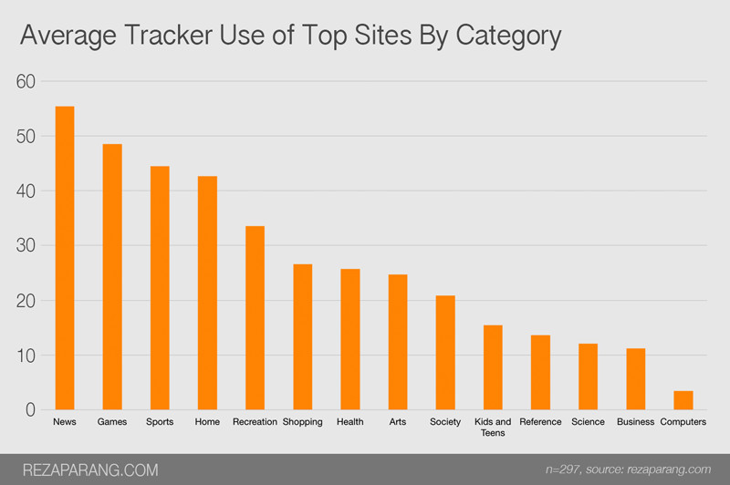

How Often Are We Tracked Online?
Originally published June 2015
The majority of my career has been spent building software for marketers to track you online. More often than not, it’s so that we can know everything about you to sell a product to you as effectively as possible.
For the past few months I've been using Ghostery, a Google Chrome extension that identifies third-party trackers, and I noticed the extent at which sites use tracking companies to measure everything about my visit. Things like who I am, my last visit, my computer, where I’m located, and much more are distributed via many, many tracker URLs (Huffington Post has over 160, as I’ll show) to different companies to store and analyze my information.
I became curious about how often major sites and brands measure our web visits, and wrote a program to measure it.
The program does the following:
- Uses the top Alexa sites by category, excluding regional and adult categories. The total number is 297 sites, after removing those categories and any repeats
- Requests each site’s front page
- Sniffs the outbound network requests for those sites for all resources (e.g., JavaScript files, stylesheets, images, HTML pages, and so forth)
- Checks each resource against a database of suspecting advertising, analytics, and marketing companies
- Delivers an audit of each site, specifying how many tracker URLs are used, what companies the site is using, and what data was sent about my visit
A typical tracker URL looks like: http://aol.tt.omtrdc.net/m2/aol/viztarget?mboxHost=www.huffingtonpost.com&screenHeight=768&screenWidth=1024, where the URL tells Omniture (the marketing system this is sent to) that I'm on Huffington Post and that my screen size is 768px in height and 1024 pixels wide.
Here are the top sites on the web by how many trackers they use:
The full data is available here.
Out of the top sites, Minecraft Forum had the most with 278 requests to tracking companies, followed by Prevention, the site of the lifestyle Magazine, with 223. The site of Hilton hotels was third with 215. That is pretty incredible (and also a reason why these sites are often so slow to load).
We can break this down by category of site too:

The full data is available here.
What’s interesting here, is you can correlate how much effort a category is trying to monetize your traffic, News having the most.
Here are the most prevalent companies tracking data:
The full data is available here.
It is worth noting that providers like Google Analytics, Double Click (owned by Google), and ScoreCard Research Beacon have a presence on the majority of the web. DoubleClick for example is represented by about 60% of the most trafficked companies. The picture that must be pulled out internally at Google must be fascinating.
There are some limitations to all this:
- I haven’t accounted for mobile, in particular native apps (iOS and Android) that will have a different type of innate tracking
- It’s misleading that sites like Facebook and Google do not use third-party trackers and may therefore not track your visits — the nature of their applications contain more user data that can be gleaned from these methods
- Some of the data is used for site optimization, performance, and other reasons (although one can argue the goal is still to sell things to you more efficiently)
- The data may vary depending on time requested, what browser (user-agent) I’m using, and other factors
For a good way to prevent or minimize as much as possible how much you are tracked (and subsequently stored in a brand’s customer relationship management software), there is a good article.
~~I’ll likely follow this with a more technical post about the program I used, which I’m planning to open source.~~
The program is available here: https://github.com/rparang/adtrack